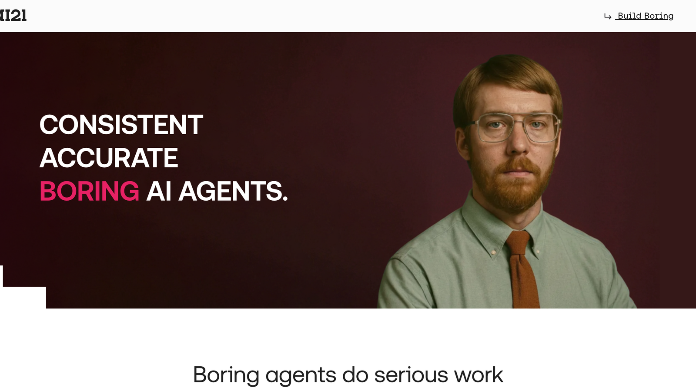
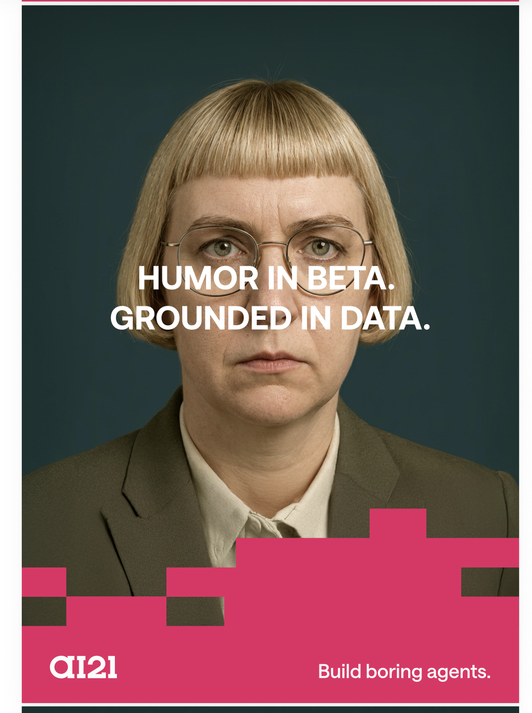
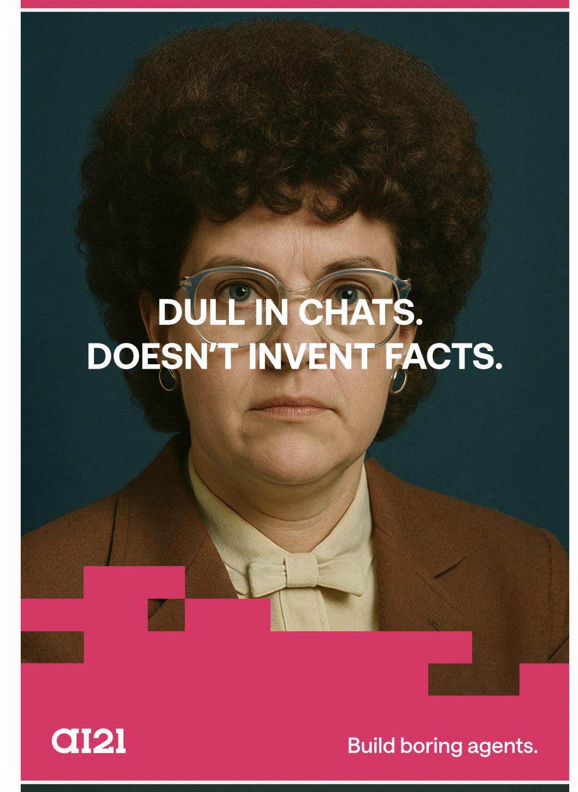
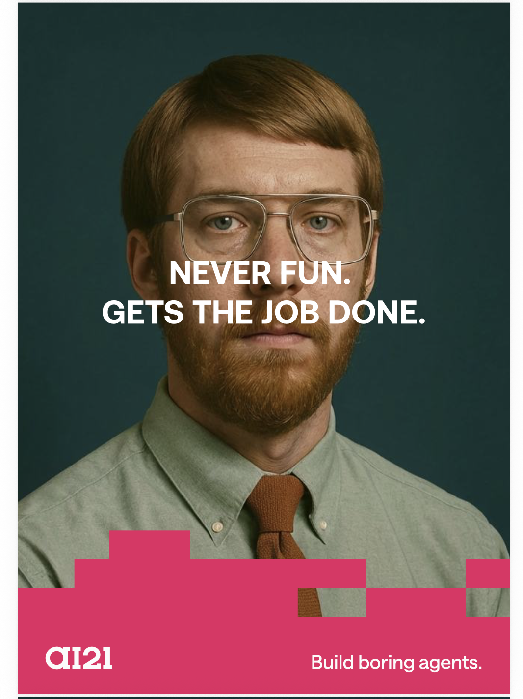
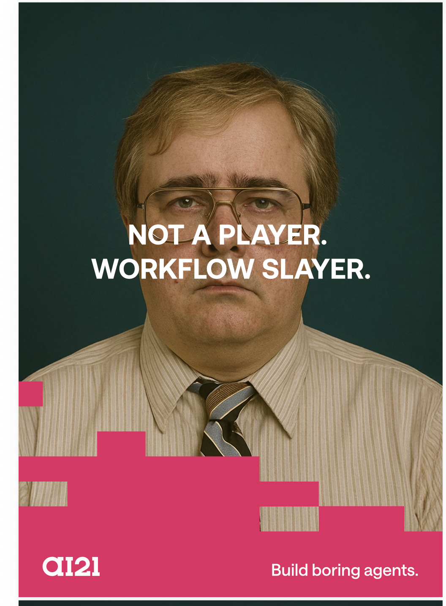
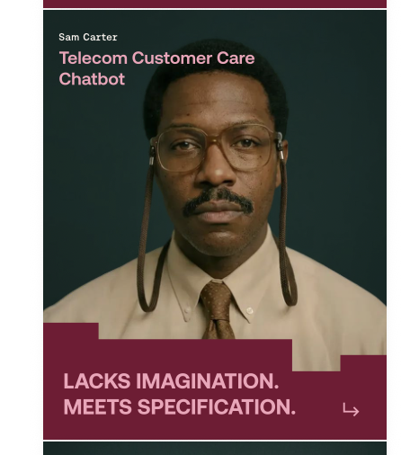

Build Boring Agents
In a world of unpredictable AI, you don’t want your enterprise agents to be brilliant. You want them to do the work — predictable, reliable, consistent. To be boring. A whole campaign built on the bravest promise in AI: dull, dependable, done.

Open live site ai21.com/boring-agents Live campaign page ↗



